Chapter 38: Plotting Data
Learning Objectives
In this tutorial, you will learn to:
- Understand the importance of data visualization.
- Create plots using ggplot2.
- Distinguish between exploratory and explanatory plots.
- Create different types of plots.
Data Visualization
Data visualization is crucial in data science. It helps us understand the data and communicate results effectively. Good visualizations are clear, concise, and convey information without requiring lengthy explanations. There are two general types of data visualizations: exploratory plots and explanatory plots.
Exploratory Plots
These plots help you understand the data and discover hidden patterns. They are created quickly, and you’ll make many of them during the data exploration phase. The axes and legends should be clean and informative.
# Example exploratory plot
example_data <- data.frame(x = rnorm(50), y = rnorm(50))
ggplot(example_data, aes(x, y)) +
geom_point() +
labs(x = "X-axis", y = "Y-axis")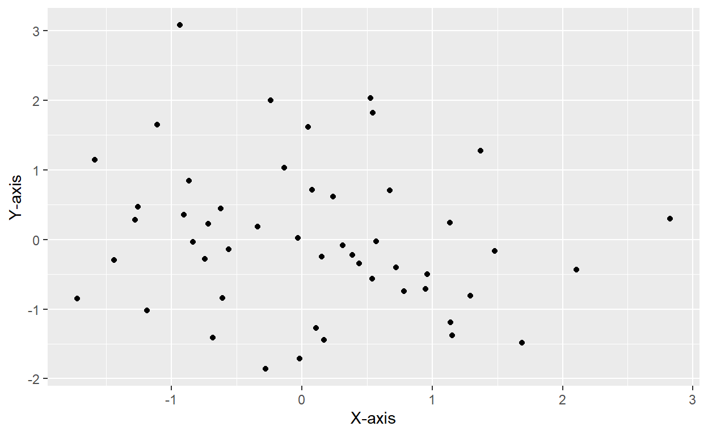
Explanatory Plots
These plots are designed to communicate insights to others. They take more time to create, and you’ll make fewer of them for each project. They should have clear labels, appropriate colors, and be easily interpretable.
# Example explanatory plot
ggplot(example_data, aes(x, y)) +
geom_point(size = 3) +
labs(x = "X-axis Label", y = "Y-axis Label", title = "Explanatory Plot") +
theme_minimal()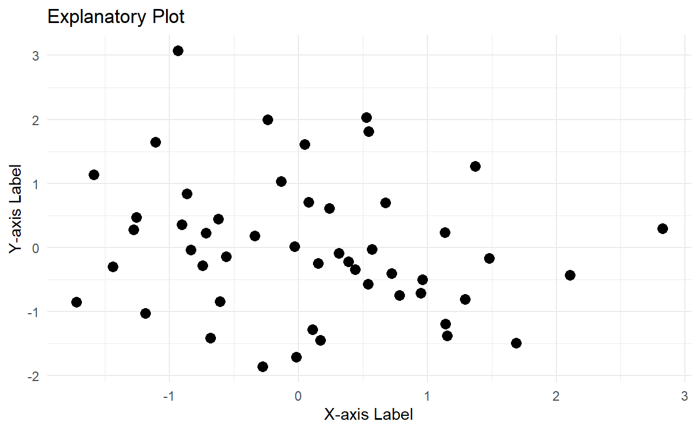
Types of Plots
We will discuss some basic plot types: histograms, scatterplots,
barplots, and boxplots. For this tutorial, we’ll use the
mtcars dataset.
Histogram
Histograms are useful for visualizing the distribution of a single
numerical variable. The following example shows a histogram of
mpg (miles per gallon) in the mtcars
dataset.
# Histogram
ggplot(mtcars, aes(mpg)) + geom_histogram(binwidth = 3) + labs(x = "Miles per Gallon", y = "Count")
Scatterplot
Scatterplots display the relationship between two numerical
variables. The example below shows a scatterplot of mpg and
hp (horsepower) in the mtcars dataset.
# Scatterplot
ggplot(mtcars, aes(hp, mpg)) + geom_point() + labs(x = "Horsepower", y = "Miles per Gallon")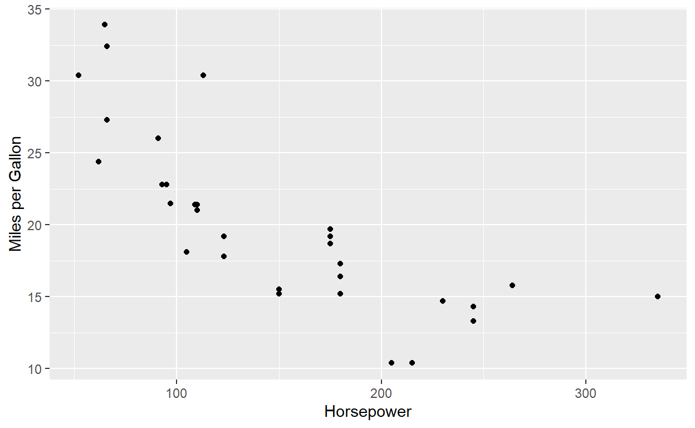
Barplot
Barplots are useful for comparing numerical values across categories.
In this example, we’ll use the cut variable to compare the
number of cars with different levels of horsepower.
# Barplot
mtcars$hp_cut <- cut(mtcars$hp, breaks = c(0, 100, 200, 300), include.lowest = TRUE)
ggplot(mtcars, aes(hp_cut)) + geom_bar() + labs(x = "Horsepower Categories", y = "Count")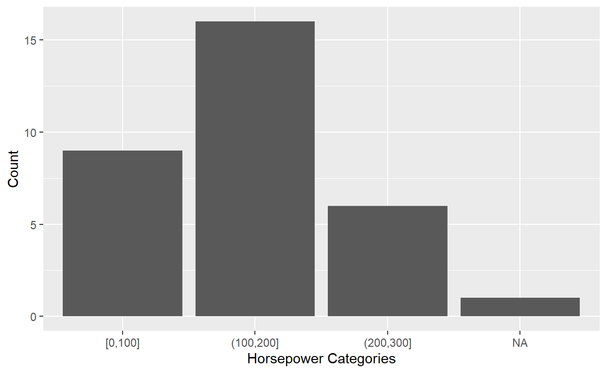
Boxplot
Boxplots summarize numerical values across categories and display the
range of values. In this example, we’ll compare mpg between
cars with different numbers of cylinders.
# Boxplot
ggplot(mtcars, aes(factor(cyl), mpg)) + geom_boxplot() + labs(x = "Number of Cylinders", y = "Miles per Gallon")Boxplot
Now, let’s practice creating plots with interactive questions.
Interactive Questions
- Create a histogram of disp (displacement) in the mtcars dataset.
# Create a histogram of `disp` in the `mtcars` dataset
ggplot( , aes()) + geom_histogram(binwidth = ) + labs(x = "Displacement", y = "Count")# Create a histogram of `disp` in the `mtcars` dataset
ggplot(mtcars, aes(disp)) + geom_histogram(binwidth = 50) + labs(x = "Displacement", y = "Count")Now, create a scatterplot of disp (x-axis) and mpg (y-axis) in the mtcars dataset.
# Create a scatterplot of `disp` (x-axis) and `mpg` (y-axis) in the `mtcars` dataset
ggplot( , aes( , )) + geom_point() + labs(x = "Displacement", y = "Miles per Gallon")# Create a scatterplot of `disp` (x-axis) and `mpg` (y-axis) in the `mtcars` dataset
ggplot(mtcars, aes(disp, mpg)) + geom_point() + labs(x = "Displacement", y = "Miles per Gallon")Now, create a barplot of the number of cars with different numbers of cylinders in the mtcars dataset.
# Create a barplot of the number of cars with different numbers of cylinders in the `mtcars` dataset
ggplot( , aes()) + geom_bar() + labs(x = "Number of Cylinders", y = "Count")# Create a barplot of the number of cars with different numbers of cylinders in the `mtcars` dataset
ggplot(mtcars, aes(factor(cyl))) + geom_bar() + labs(x = "Number of Cylinders", y = "Count")Finally, Create a boxplot comparing mpg between cars with different numbers of gears in the mtcars dataset.
# Create a boxplot comparing `mpg` between cars with different numbers of gears in the `mtcars` dataset
ggplot( , aes( , )) + geom_boxplot() + labs(x = "Number of Gears", y = "Miles per Gallon")# Create a boxplot comparing `mpg` between cars with different numbers of gears in the `mtcars` dataset
ggplot(mtcars, aes(factor(gear), mpg)) + geom_boxplot() + labs(x = "Number of Gears", y = "Miles per Gallon")Congratulations! You have completed this interactive tutorial on data visualization using the learnR package. Keep practicing and experimenting with different datasets and plots to improve your data visualization skills. Remember, a well-crafted visualization can help you and others understand the data more effectively.
Chapter 39: Good Plots
In this interactive tutorial, we will explore some tips for creating good plots using the R programming language.
Choosing the Right Type of Plot
Different plot types are suitable for different types of data. Choosing the right plot can significantly improve the effectiveness of your visualization.
Mindful Color Choices
Colors play an important role in data visualization. Be mindful of color choices, considering factors such as accessibility and the message you want to convey.
Axis Labeling
Clear and descriptive axis labels are essential for making your plots easy to understand.
Example: iPhone Sales
Let’s create a simple bar plot using ggplot2 to demonstrate the importance of axis labeling and color choices. We will use a small dataset representing iPhone sales over three years.
data <- data.frame(
Year = c(2020, 2021, 2022),
Sales = c(190, 210, 230)
)Now, create a bar plot with the given data. Set the x-axis to “Year” and the y-axis to “Sales”. Use a color palette that is easy to read.
data %>%
ggplot(aes(x = Year, y = Sales, fill = factor(Year))) +
geom_bar(stat = "identity") +
scale_fill_brewer(palette = "Dark2") +
labs(x = "Year", y = "Sales (in millions)", title = "iPhone Sales Over Time", fill = "Year") +
theme_minimal()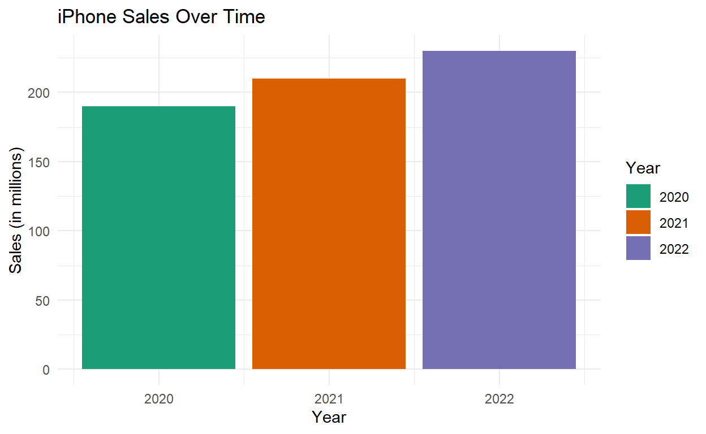
Exercise 1: Creating a Bar Plot
Now it’s your turn! Create a bar plot with the following data, representing the sales of three different products over two years.
exercise_data <- data.frame(
Year = rep(c(2021, 2022), each = 3),
Product = rep(c("A", "B", "C"), 2),
Sales = c(120, 100, 150, 130, 110, 170)
)Your task is to create a bar plot with “Product” on the x-axis and “Sales” on the y-axis, and use different colors for each product. Make sure to label your axes and choose an appropriate color palette.
exercise_data %>%
ggplot(aes(x = Product, y = Sales, fill = factor(Product))) +
geom_bar(stat = "identity") +
scale_fill_brewer(palette = "Set2") +
labs(x = "Product", y = "Sales (in millions)", title = "Product Sales Over Time", fill = "Product") +
theme_minimal()Congratulations! You’ve completed this interactive tutorial on creating good plots using R. Remember to choose the right type of plot, be mindful of color choices, and label your axes for effective data visualizations.
Chapter 40: Introduction to ggplot2
In this tutorial, we will introduce you to ggplot2, a powerful R package for creating elegant and flexible plots. We will learn the basics of ggplot2, how to work with aesthetics, and explore different geoms for various types of plots.
Loading the ggplot2 package
First, let’s install and load the ggplot2 package.
install.packages("ggplot2")
library(ggplot2)The Basics
In ggplot2, plots are constructed using a series of layers. Each layer represents a different aspect of the plot, and these layers are combined using the plus sign (+).
A basic ggplot2 plot can be constructed using the following general form:
ggplot(data = DATASET) +
geom_PLOT_TYPE(mapping = aes(VARIABLE(S)))The first step is to call the ggplot() function and
specify the dataset to be used. Next, you will need to specify the type
of plot (geom) you want to create.
For this tutorial, we will be working with the diamonds
dataset, which is included in ggplot2. This dataset contains information
on various attributes of 53,940 diamonds.
Scatterplots: geom_point
Let’s start by creating a scatterplot using the
geom_point() function. Scatterplots are useful for
examining the relationship between two numeric variables.
scatterplot_example <- ggplot(data = diamonds) +
geom_point(mapping = aes(x = carat, y = price))
scatterplot_example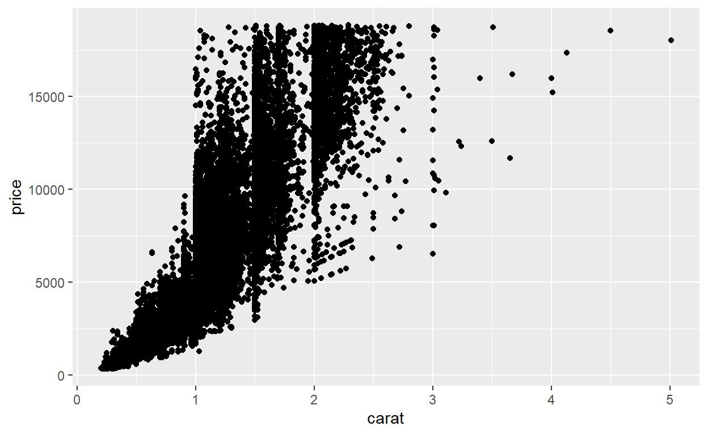
Aesthetics
You can modify the appearance of your plot using the
aes() function. This function allows you to change the
size, color, and shape of the points in your scatterplot, among other
things.
Point color
To change the color of the points based on a variable, you can map
the variable to the color argument within the
aes() function.
color_example <- ggplot(data = diamonds) +
geom_point(mapping = aes(x = carat, y = price, color = clarity))
color_example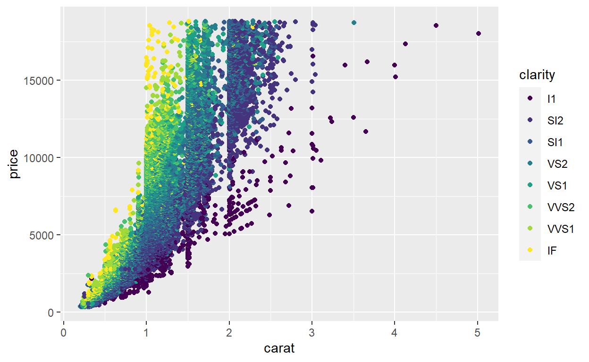
Interactive Questions
Now, let’s test your understanding of ggplot2 with some interactive questions.
Question 1: Scatterplot
Create a scatterplot showing the relationship between the
x (length) and y (width) variables in the
diamonds dataset.
# Your code hereggplot(data = diamonds) +
geom_point(mapping = aes(x = x, y = y))Question 2: Aesthetics
Modify the scatterplot from Question 1 to color the points based on the cut variable.
# Your code hereggplot(data = diamonds) +
geom_point(mapping = aes(x = x, y = y, color = cut))Histograms: geom_histogram
Histograms help us visualize the distribution of a continuous
variable, providing insights into the range of values and the shape of
the data. Let’s create a histogram of the carat variable
from the diamonds dataset.
ggplot(data = diamonds) +
geom_histogram(mapping = aes(carat))## `stat_bin()` using `bins = 30`. Pick better value with `binwidth`.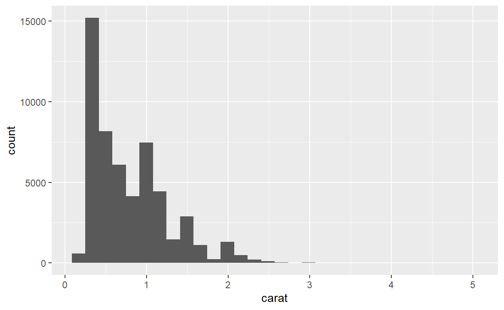
In this histogram, the rectangular boxes show the number of diamonds within each bin. Most of the diamonds in the dataset have a carat size less than 1.
Barplots: geom_bar
Barplots show the relationship between a categorical variable and a
set of numbers. Let’s create a barplot showing the number of diamonds
for each cut category in the diamonds
dataset.
ggplot(data = diamonds) +
geom_bar(mapping = aes(cut))
The rectangular bars represent the count of diamonds for each
category of the cut variable.
Boxplots: geom_boxplot
Boxplots provide a summary of a numerical variable across categories.
Let’s create a boxplot showing how the price of diamonds
varies across color categories.
ggplot(data = diamonds) +
geom_boxplot(aes(x = color, y = price))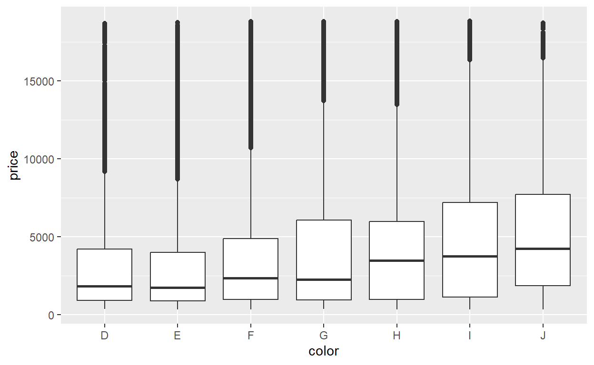
The median price (black horizontal bar) increases as the diamond color improves from category J to D.
Exercise: Create a Customized Boxplot
Now, it’s your turn to create a boxplot. Using the code provided
above, create a boxplot of price vs. color
from the diamonds dataset, but change the fill color to
blue.
# Write your code hereggplot(data = diamonds) +
geom_boxplot(aes(x = color, y = price), fill = "blue")Summary
This tutorial introduced you to the basics of creating histograms, barplots, and boxplots using ggplot2. You should now be comfortable generating and interpreting these plots, as well as customizing some of their features. Keep exploring and practicing to become more proficient in ggplot2!
Chapter 41: Customization in ggplot2
In this tutorial, we will learn how to customize ggplot2 plots using the diamonds dataset as an example. We will explore how to control colors, add labels, and apply themes to our plots.
First, let’s load the necessary libraries and the diamonds dataset.
library(ggplot2)
library(learnr)Customizing Colors
We can customize the colors of our plots in ggplot2. Let’s start by creating a bar plot of diamond clarity.
ggplot(data = diamonds) +
geom_bar(mapping = aes(x = clarity, fill = clarity))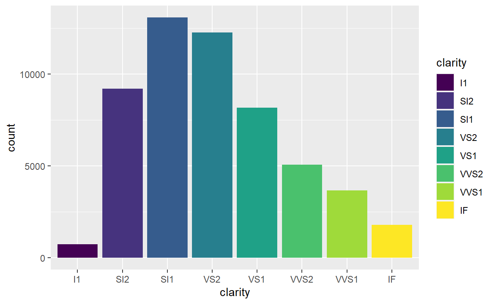
Now, we want to see the distribution of diamond cuts within each
clarity group. To do this, we will use the fill aesthetic
with the cut variable.
ggplot(data = diamonds) +
geom_bar(mapping = aes(x = clarity, fill = cut))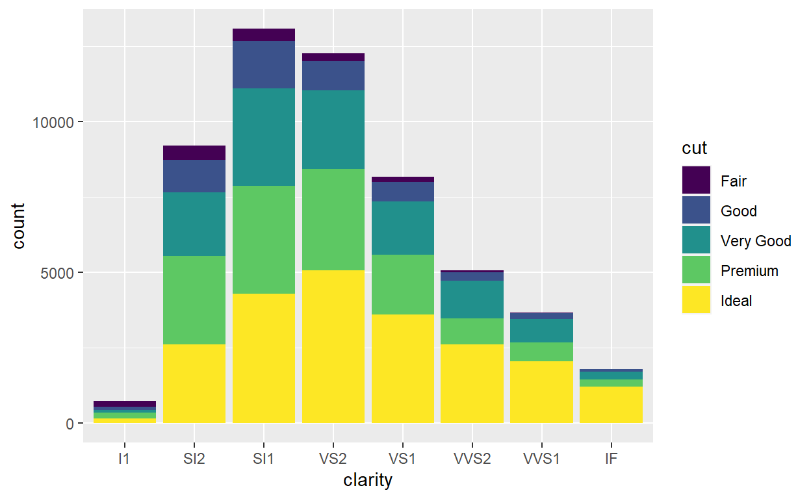
However, we may want to change the colors manually for better visualization. We can do this using the scale_fill_manual function.
ggplot(data = diamonds) +
geom_bar(mapping = aes(x = clarity, fill = cut)) +
scale_fill_manual(values = c("red", "orange", "darkgreen", "dodgerblue", "purple4"))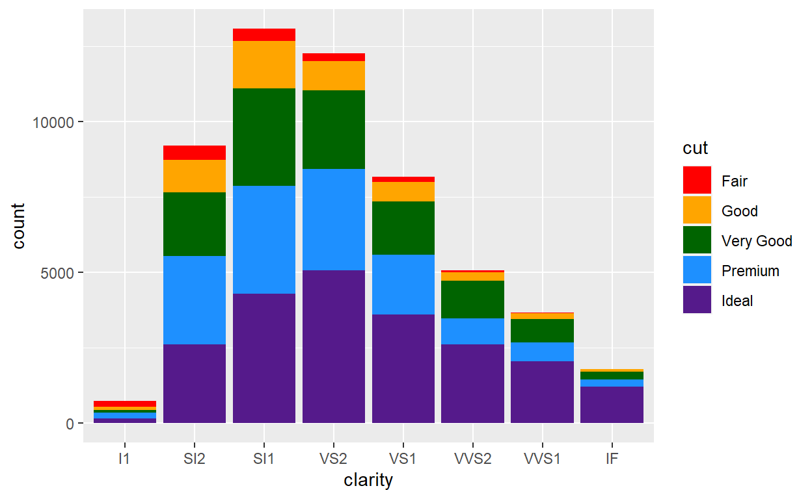
Adding Labels
A good title and axis labels can make your plot more informative.
Let’s add a title, subtitle, and a y-axis label to our plot using the
labs() and ylab() functions.
ggplot(data = diamonds) +
geom_bar(mapping = aes(x = clarity, fill = cut), position = "fill") +
scale_fill_manual(values = c("red", "orange", "darkgreen", "dodgerblue", "purple4")) +
labs(title = "Diamond Clarity vs Cut Distribution",
subtitle = "Proportion of cuts within each clarity group") +
ylab("Proportion")
Applying Themes
We can change the overall appearance of our plot using themes. There
are 8 built-in themes in ggplot2. Let’s apply the
theme_classic() to our plot.
ggplot(data = diamonds) +
geom_bar(mapping = aes(x = clarity, fill = cut), position = "fill") +
scale_fill_manual(values = c("red", "orange", "darkgreen", "dodgerblue", "purple4")) +
labs(title = "Diamond Clarity vs Cut Distribution",
subtitle = "Proportion of cuts within each clarity group") +
ylab("Proportion") +
theme_classic()
Customizing Themes
We can adjust the theme of our graph using the theme()
function. This can be used to change the text size, font, and color of
various elements within the graph.
Let’s practice by creating a bar graph using the
diamonds dataset.
ggplot(data = diamonds) +
geom_bar(mapping = aes(x = clarity, fill = cut), position = "fill") +
labs(title = "Diamond Clarity vs. Cut Quality") +
theme_classic() +
theme(title = element_text(size = 20),
axis.text = element_text(size = 14),
axis.title = element_text(size = 16, face = "bold"),
legend.text = element_text(size = 14),
plot.subtitle = element_text(color = "gray30")) +
guides(fill = guide_legend("Cut quality"))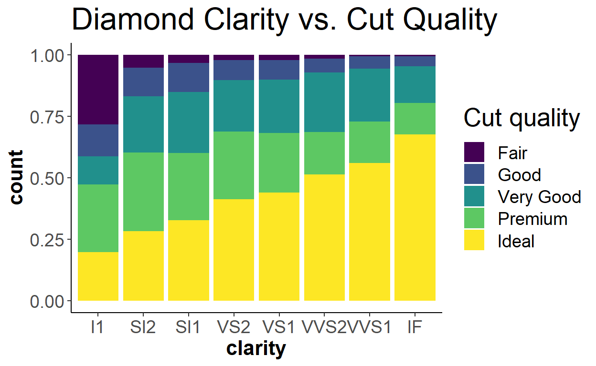
Adjusting Scales
We can control the number of values displayed on an axis using
scale_x_continuous or scale_y_continuous for
continuous variables, and scale_x_discrete or
scale_y_discrete for discrete variables.
Coordinate Adjustment
Sometimes you may need to flip your axis. We can do this with the
coord_flip() function.
Adding Annotations
The annotate function allows you to add text to your
plot. The size, position, and alignment of the text can be
controlled.
Conclusions
In this tutorial, you’ve learned about several ways to customize your ggplot2 plots, including color and theme customization, legend and scale adjustments, axis flipping, and adding annotations. Remember, ggplot2 is a very flexible tool thanks to its layered approach, and we’ve just scratched the surface of what’s possible. As you continue to explore and experiment with ggplot2, you’ll find that you can create nearly any plot you can imagine.
To keep learning, consider exploring more about the geom_text() function for adding text labels to points on your plot, or dive into the many other geoms and themes available in ggplot2. Happy plotting!
Chapter 42: Saving Plots
Introduction
As you work with R, you’ll often need to save your plots for use in presentations, documents, or to share with your team. In this interactive tutorial, we’ll explore how to save plots from RStudio in various formats.
Types of Image Files
R can generate a variety of image file formats. Here, we’ll focus on four commonly used formats:
- JPEG: A compressed format that is popular and saves storage space. However, it loses quality with each save. The background is white by default.
- PNG: A high-quality bitmap format that retains its quality over time but uses more storage space. PNG images have a transparent background.
- TIFF: A bitmap format intended to preserve quality over time. TIFF images can be edited with photo editors like Photoshop. If you plan to edit the image later, this format is a good choice.
- PDF: A vector format, useful for plotting multiple images in a single file or for printing. These can be scaled to any size without pixelation.
Saving Plots with ggsave()
The ggsave() function in ggplot2 makes it easy to save
your plots. By specifying the plot, filename, and the destination path,
you can quickly save any ggplot2 generated plot. The file format is
determined by the file extension in the filename argument.
# Let's create a simple scatterplot
library(ggplot2)
myplot <- ggplot(mtcars, aes(wt, mpg)) + geom_point()
# Save the plot as a PNG
ggsave(plot = myplot, filename = "myplot.png", path = ".")## Saving 6.5 x 4 in image# Save the plot as a JPEG
ggsave(plot = myplot, filename = "myplot.jpeg", path = ".")## Saving 6.5 x 4 in imageYou can also control the size of your image using the height, width, and unit arguments in ggsave().
# Save the plot as a larger PNG
ggsave(plot = myplot, filename = "myplot_large.png", path = ".", height = 9, width = 9, unit = "in")Alternative Approach: Graphics Devices
While ggsave() is a straightforward way to save images,
there may be times when you need to use an alternative method. R
provides graphics devices like png(), jpeg(),
pdf(), or tiff(). After calling the
appropriate function and specifying the filename, you print the image
object and finalize the image file generation with
dev.off().
# Save the plot as a PNG using png()
png("myplot_graphics_device.png")
print(myplot)
dev.off()## png
## 2# Save the plot as a JPEG using jpeg()
jpeg("myplot_graphics_device.jpeg")
print(myplot)
dev.off()## png
## 2This concludes our tutorial on saving plots in R. Remember, the right format for your image depends on your specific needs, so choose the one that fits best. Whether you’re using ggsave() or another graphics device function, R provides a range of options to help you effectively share your data visualizations.
Chapter 43: From Exploratory to Explanatory
Introduction
Welcome to this interactive tutorial on data visualization with
ggplot2! In this tutorial, we will focus on transforming an
exploratory plot into an explanatory one. We will use the
mpg dataset from the ggplot2 package.
Data Overview
The mpg dataset contains information about different car
models, including their class, manufacturer, and fuel efficiency (in
miles per gallon). Let’s take a quick look at the data.
head(mpg)Question 1
Let’s create an exploratory plot showing highway mileage
(hwy) for different car classes (class).
Fill in the … to complete the code.
ggplot(data = ..., aes(x = ..., y = ...)) +
geom_boxplot()ggplot(data = mpg, aes(x = class, y = hwy)) +
geom_boxplot()Adding Titles and Labels
Now, let’s make the plot more explanatory by adding a title, x and y
axis labels using the labs() function.
Question 2
Complete the code by filling in the ....
ggplot(data = mpg, aes(x = class, y = hwy)) +
geom_boxplot() +
labs(title = ..., x = ..., y = ...)ggplot(data = mpg, aes(x = class, y = hwy)) +
geom_boxplot() +
labs(title = "Highway Mileage for Different Car Classes", x = "Car Class", y = "Highway Mileage (mpg)")Customizing the Plot
Let’s now modify the theme and color of our boxplot to make it more
aesthetically pleasing. We will use theme_minimal() for a
cleaner theme and scale_fill_brewer() to fill the boxes
with color.
ggplot(data = mpg, aes(x = class, y = hwy, fill = class)) +
geom_boxplot() +
labs(title = "Highway Mileage for Different Car Classes", x = "Car Class", y = "Highway Mileage (mpg)") +
scale_fill_brewer(palette = "Set3") +
theme_minimal()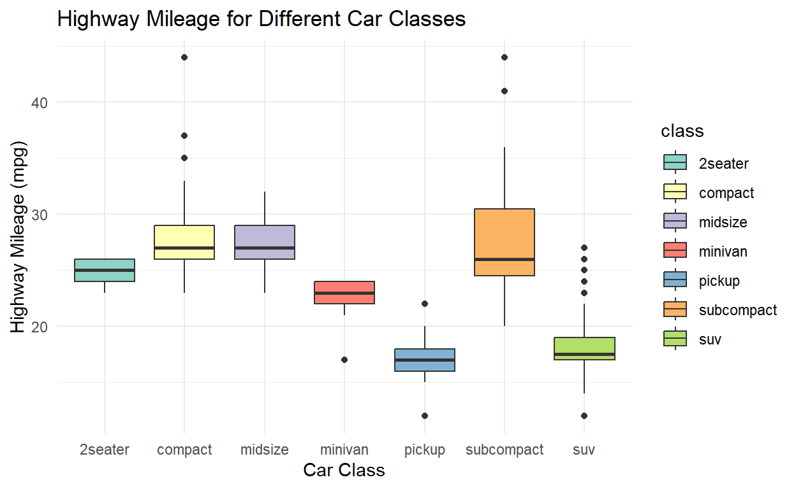
This concludes our tutorial. We hope it has helped you understand how to transform exploratory plots into more explanatory ones using ggplot2! Happy plotting!